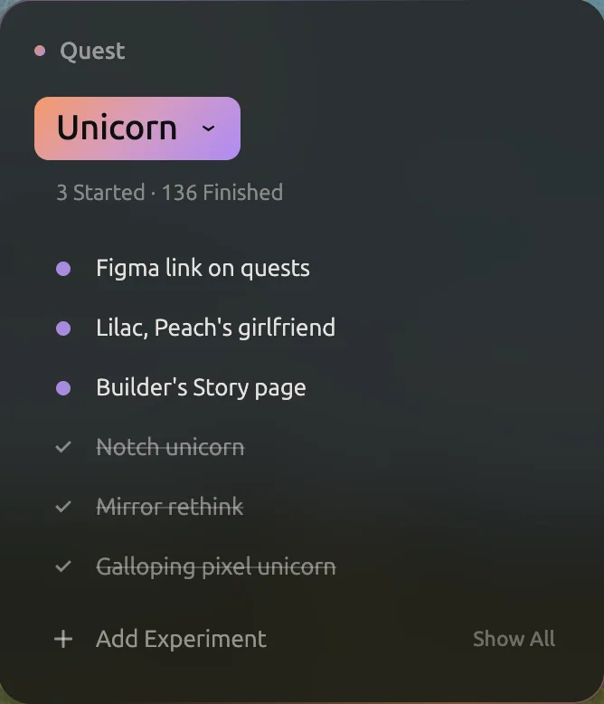
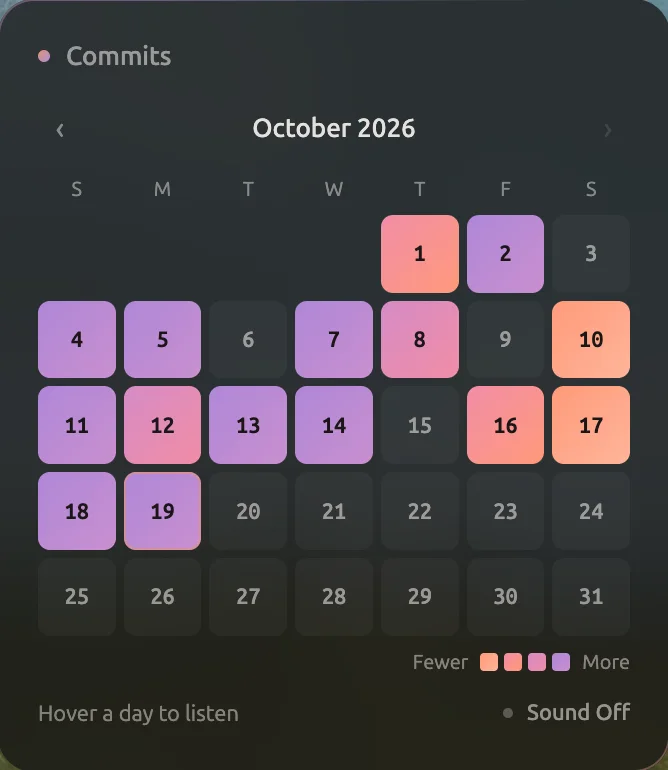
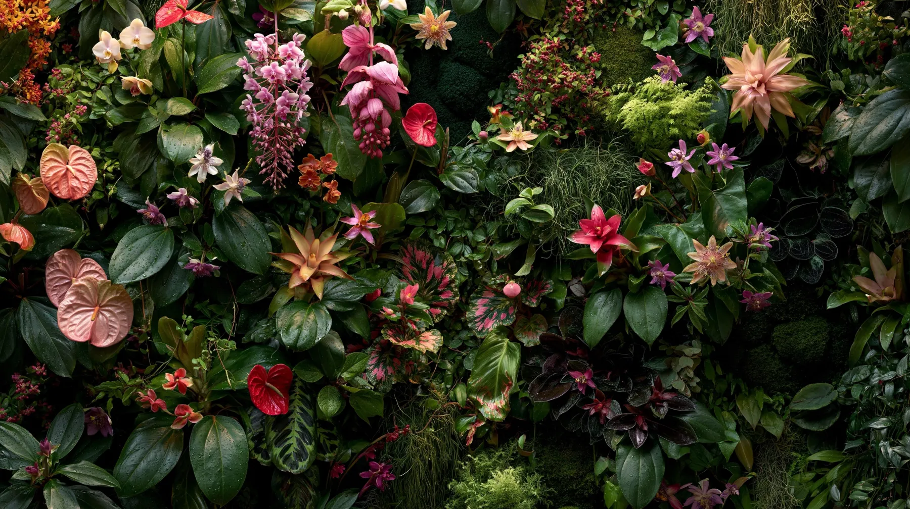

Desktop App · macOS
Unicorn
A creative OS for designers who work in the terminal. It sits next to Claude Code, tracks quests and experiments while you work, and gives every day of commits a soundtrack.
ElectronTone.jsClaude Code
A creative OS for designers who work in the terminal. It sits next to Claude Code, tracks quests and experiments while you work, and gives every day of commits a soundtrack.
Photograph a lichen, a moss or a newt on a walk. The app lifts it out of the photo, pins it to the trail, and tells you what it could indicate about the air and water there.
Four planted walls, each paired with real, credited recordings of the birds that belong there. Hover a name and its song moves around you in stereo.





ʻiʻiwi ʻapapane ʻamakihi ʻōmaʻo Hawaiʻi · 1/4Research, flows and interface design for apps and tools, carried through to a working build you can hold.
FigmaNative SwiftUI, designed for the system it runs on: glass controls, real metrics, one layout that adapts.
SwiftUISites that do one thing well, from a calm studio page to a shader that ripples a wall of plants.
WebGLInterface sound and real recorded audio, sourced and credited, mixed so it belongs to the screen.
Web Audio